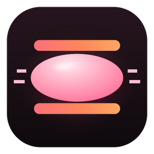
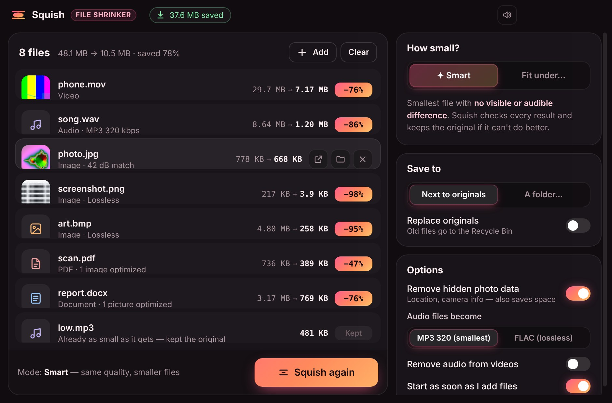

Squish shrinks videos, audio, photos, PDFs and Office files to the smallest size that still looks and sounds the same — or squeezes a video under Discord's 10 MB limit. Free, offline, no limits.

Drop in one file or a whole folder. Everything runs on your PC — nothing is uploaded.
Finds the smallest size with no visible or audible difference — and actually measures every result to make sure.
Pick a size — 10 MB for Discord, 25 MB for email — and Squish hits it, lowering quality only as much as it has to.
Videos, audio, JPG, PNG, WebP, GIF, BMP, TIFF, PDFs, and Word, PowerPoint & Excel files.
"Squish" or "Squish to fit 10 MB" right in File Explorer. The smaller copy lands next to the original.
If a file can't get smaller, Squish keeps your original. Replace mode sends old files to the Recycle Bin, never deletes them.
No account, no uploads, no file limits. Your files never leave your PC.
Three steps. No account needed.
Click Download for Windows above. You'll get Squish-Setup.exe.
Open it and click through the setup — pick a folder or keep the default. Squish opens when it's done.
Drop in files or a folder — or right-click any file and choose Squish. That's it.
Not in Smart mode. Squish compares each result to the original and only keeps versions you can't tell apart. "Fit under" mode lowers quality only as much as needed to hit your size.
No. Squished copies are saved next to the originals as "name (squished)". If you turn on "Replace originals", the old files go to the Recycle Bin, so you can always get them back.
It depends on the file. Phone videos and screen recordings often shrink 50–90%, WAV audio about 85%, screenshots up to 98%, and big PDFs or Word files often more than half.
Some files are already squeezed hard — low-quality MP3s, ZIPs, videos downloaded from social media. Squish won't make them bigger or worse, so it keeps the original.
Right-click a file, choose Show more options, then Squish or Squish to fit 10 MB.